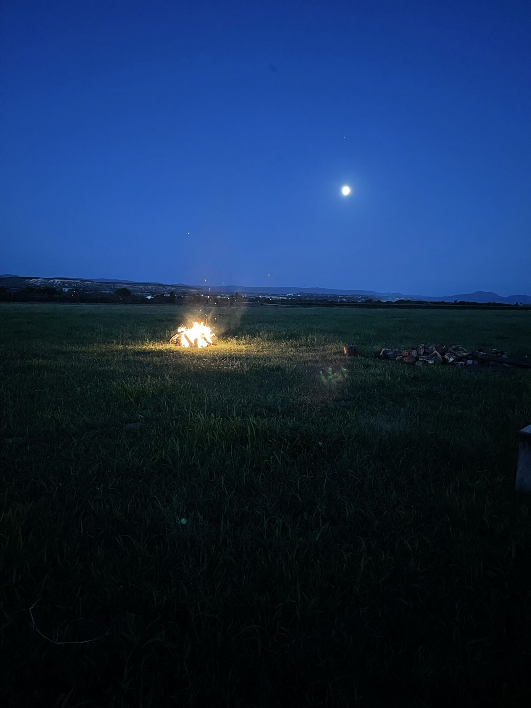
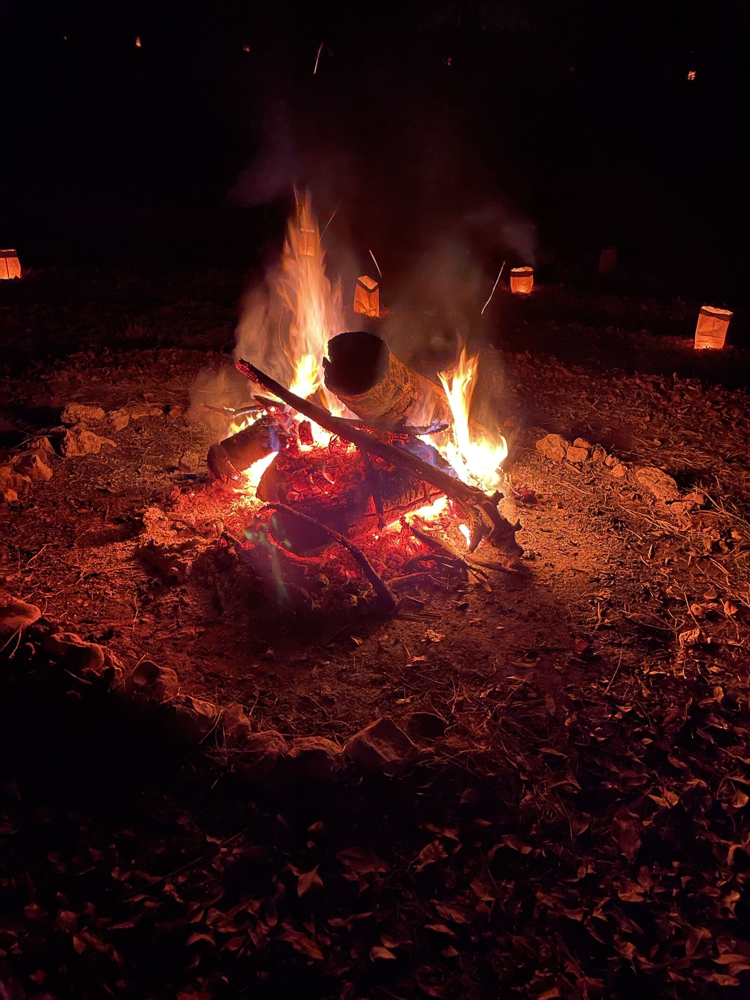
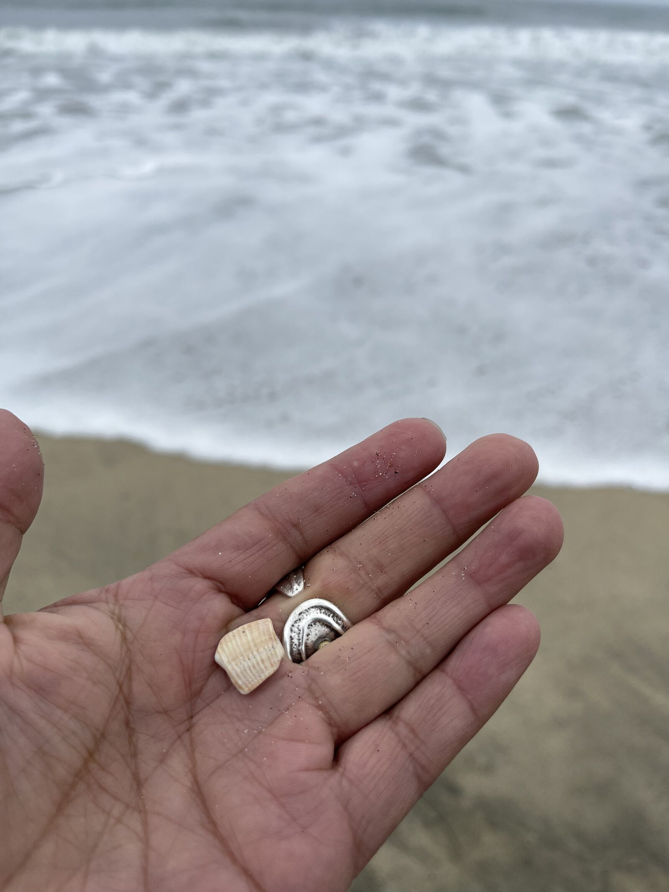

1
GoalsThe house, not the star.
Markets, products and roles are stars, useful while low, then gone. Know which house you are steering by, and count four kinds of wealth at once: financial, relational, cultural and ecological.

The same seven steps, run by a leadership team, a company or a board.
Each reading holds a passage, the principle, questions for the room, and one practice for the quarter. Nothing sacred is in them, only what works and belongs to no one.
Markets, products and roles are stars, useful while low, then gone. Know which house you are steering by, and count four kinds of wealth at once: financial, relational, cultural and ecological.

A star is useful while it is low. The house on the horizon stays where it is.
Nobody carries the whole way. Short legs, and all the care in the hand-off, said back before the runner lets go.
The Inca relays could cover about 240 kilometers a day, and the roughly 2,000 kilometers from Quito to Cusco in a week; the legs were about 6 to 9 kilometers. National Museum of the American Indian, The Chaski, 2015, p. 3; D'Altroy, The Incas, 2015, p. 370, as cited in the Peaks plan.

The runner moves one leg; the message is said back at every hand-off.
in a day, by relay
National Museum of the American Indian, The Chaski, 2015Quito to Cusco, in a week
the same source, p. 3one leg of the relay
D'Altroy, The Incas, 2015, p. 370Settle the room before anything is decided. Two channels in every report, the numbers and what they mean.

One breath round first. Then the seats. Then the two channels.
Will this make the great-grandchildren whole, or hollow them out? Leaders recognized, not campaigned for. Decisions woven, not voted to a winning half.

Four generations on one thread. Woven, not split.
A room moves away from the one who needs something from it.
"Wanting is not a feeling. It's a heart rate." The Far Messengers.

The room drifts off while the center wants. It comes near when the center is full.
Built on quiet days, spent on hard ones.
Seven quiet days fill it. One hard day spends some. It is still there.

Tables of five take the parts of a championship team: the coach, the carrier, the steady one, the wild one who plays every monster, and the Eagle, the ancestor watching from above. Each table writes three true sentences for a far community, then carries them past the monsters every crossing meets: panic at the dry spring, ego and pride at the arrival.
The coach, the carrier, the steady one, the wild one, and the Eagle watching from above. Three true sentences for a far community.
Panic. The first monster every crossing meets.
The carrier is told to give two of the three sentences away, so no one carries it alone.
Ego and pride. Then the gap between what was written and what arrived.
That is the message. It is not mine. I only carried it.
Then the gap between what was written and what arrived, a real first step with a person and a date, and finally the tables carry their messages to one another.
Formats: a 90-minute core, a half day, or a full day with body sessions and sound. Localized for companies (the far community is a customer or the field), boards (the stakeholders and the next board) and community teams (the families served). Facilitators train as the one the coach calls in, so the exercise scales beyond any one teacher.
A frightened room cannot think. One breath round before anything is decided, and the decision said back before anyone leaves.